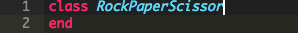
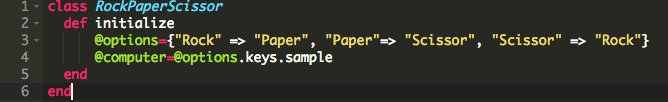
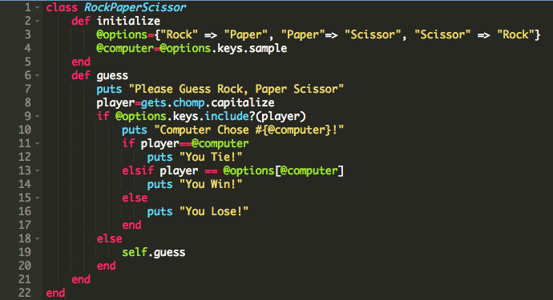
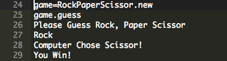

Looping in JavaScript Vs Ruby!
Ruby Variable Types and Their Scope!
My Thinking Style: Understanding and Learning
Introduction to CSS: Margin, Padding, and Borders
Classes Are In Session!
How to Make Your Own Class!
2/15/15
This week’s technical blog topic is about Classes! First off, if you’ve done any programming at all, you’ve most like have already used a variety of classes. For instance, when you type a string and manipulate it with something like .capitalize, you are use the String class and a methods from the string class! Similarly numbers belong to the Integers class and arrays in the Array class. In ruby you can create your own classes to do different things! Creating classes is incredibly useful to group methods for objects that are the same. They are also useful to model real-world objects and concepts! How about a game of Rock, Paper, Scissors?
First, let’s talk about how to create a class. To create a class can define it by stating it’s a class followed by the name of the class
The next step of creating your class is to initialize it with the special method “initialize”. This step is where you define the characteristic variables of your class. In most cases, you want these variables to be instance variables by adding a @ symbol in front of the variable name. Instance variables are variables that are accessible to all methods within your class.
In Rock Paper Scissors, we can model the game by initializing the different options you can choose from and the corresponding choice that it losses too. We can also set an opponent(i.e the computer) that chooses from one of the three options. If we wanted too, we can also initialize the player here as well (for this example, I opted not too).
The final step in creating your class is to add the different methods. For my example, in a game of Rock, Paper, Scissors you can make a guess and see if you beat your opponent. Therefore, we can add a method call "guess", which takes the user's choice and compares it with the computer's choice to determine who wins.
With this class, we can now play Rock, Paper, Scissors with the computer! All we need to do now is create a new object for this class and we can play against the computer with the guess method!
In this example, I modeled a very simple game of Rock, Paper, Scissors but you could potentially model just about anything with classes. Classes conveniently allows us to group methods for a particular object we want to model. Now go out there and try it yourself!